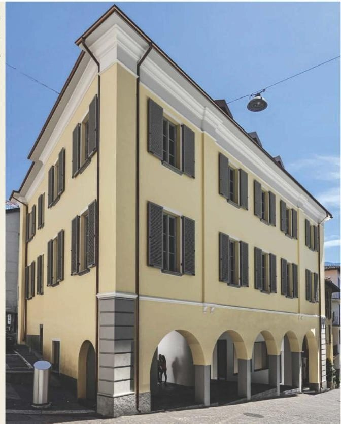
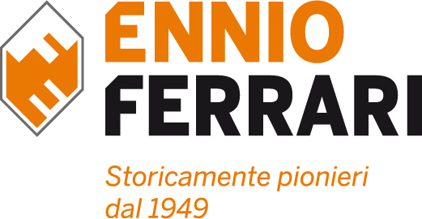
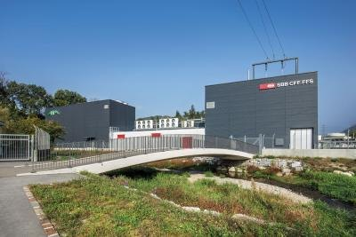
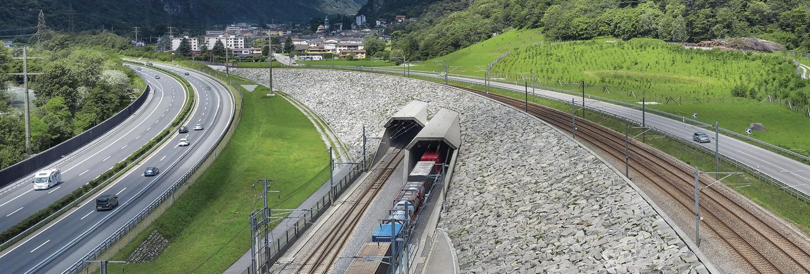
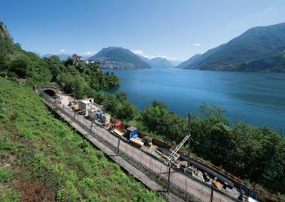
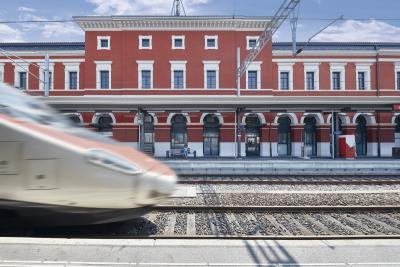
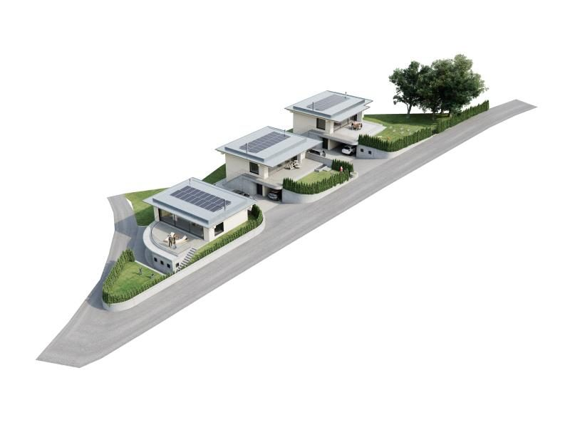

Residenza Contrada Cappuccini
Locarno

Ennio Ferrari SA · Lodrino, Riviera
Impresa generale, genio civile, lavori ferroviari e ambientali. Da Lodrino, in tutto il Ticino e oltre.
77 annidal 1949, a conduzione famigliare
ISO 9001sistema di qualità certificato
AlpTransitportali, ponti e cunicoli
Osognaimpianto miscele bituminose dal 2013
4,5 / 532 recensioni su Google
Settori
Residenze, stabili amministrativi, scuole e chiese, come impresa generale dall'inizio degli anni 80.
Opere stradali, ponti, argini, acquedotti, fognature e regimazioni fluviali.
Armamento, posa di binari, segnalamento ed elettrificazione, su tratte nuove ed esistenti.
Ripari valangari, opere forestali e di premunizione, discariche.
Cappelle, edifici e opere in pietra naturale, con metodi innovativi e nel rispetto del contesto.
Pareti ancorate, demolizioni, lavori in corda in quota.
Pavimentazioni stradali con miscele bituminose prodotte nel nostro impianto di Osogna.
Bonifica d'amianto e deposito controllato dei materiali.
In tutto il Ticino
11 / 11
Mendrisio
Sottostazione AIM e FFS

Referenze



Immobiliare
Due residenze proposte dalla Ennio Ferrari: a Locarno, in un edificio storico, e a Osogna, tre ville unifamiliari nella natura della Riviera.

Locarno

Osogna, Riviera
L'impresa
Attiva dal 1949, la Ennio Ferrari ha preso un posto di rilievo nel Canton Ticino. Dal 1996 il figlio Nicola è entrato nella conduzione, oggi ne è presidente. L'impresa resta a conduzione famigliare, con un occhio di riguardo alla realtà locale e lavori anche oltre i confini cantonali.
Un importante parco veicoli per i movimenti terra, attrezzature per la demolizione e la lavorazione di inerti, un impianto di miscele bituminose a Osogna.
Nicola FerrariPresidente e delegato del consiglio d'amministrazione
La piena soddisfazione del committente è lo scopo principale.
Formazione continua, in un clima di lavoro gradevole.
Le norme di sicurezza sui cantieri sono parte della nostra filosofia, da sempre.
Un sistema di qualità certificato secondo la norma EN ISO 9001.
Investimenti costanti in macchine e attrezzature.
Contatto
WhatsApp sul numero degli uffici, se attivo.